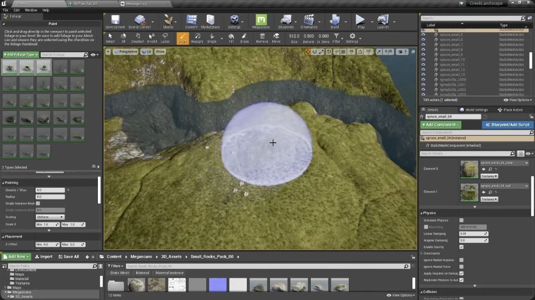
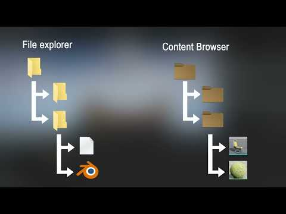
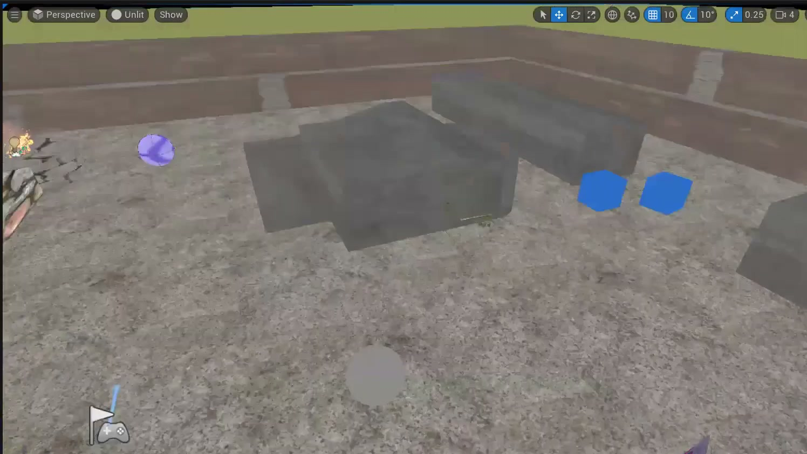
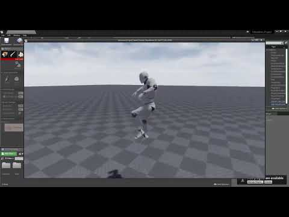
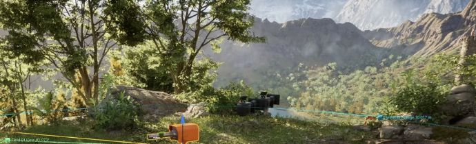
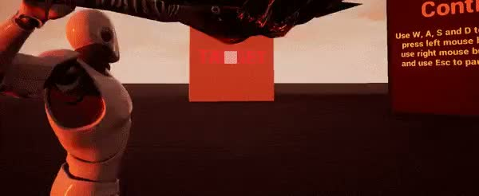
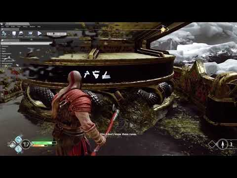
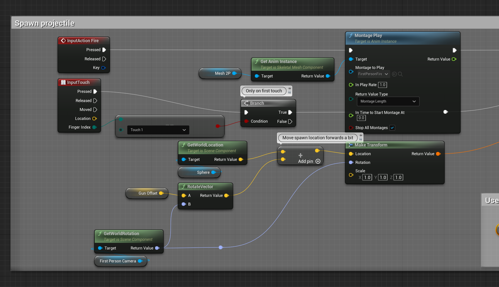

PROJECT COLLECTION
Unreal Engine projects
Individual projects, source downloads and preview images. Runtime verification is listed on each overview.


Unreal Engine
First-Person Foundations
A first-person game project that puts the player’s viewpoint directly inside a three-dimensional scene. Movement and camera control provide the foundation for exploring and interacting with its levels.
- First-person perspective
- Player movement
- Three-dimensional scene exploration








Project preview unavailable






Unreal Engine
AI Playground
An Unreal Engine scene for exploring AI characters and interactive gameplay systems in a three-dimensional environment. The project brings character behavior into a level where its relationship with the surrounding space can be observed.
- AI character systems
- Three-dimensional game scene
- Interactive project source




Project preview unavailable
Project preview unavailable



Project preview unavailable

Unreal Engine
Material Workshop
A collection of Unreal Engine material setups focused on the appearance of three-dimensional surfaces. The project explores how material choices change the way objects and environments read under lighting.
- Surface materials
- Texture presentation
- Material appearance under lighting